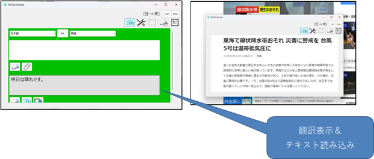
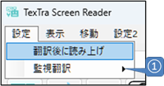
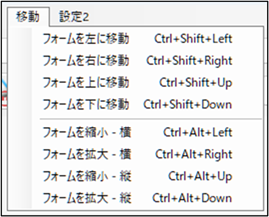

メイン画面

メイン画面

① フレーム画面の枠内のテキストを読み込み、翻訳、読み上げを行います。
② 読み上げを停止します。
③ 範囲選択翻訳（Ctrl＋F10)
画面上の特定の部分を選択して、その部分にあるテキストを翻訳します。
④ 監視翻訳
一定時間ごとに枠内のテキストを読み出し、翻訳を行います。
領域固定と併用できます。
メニュー＞設定＞監視翻訳で、読み取る時間間隔を設定します。
⑤ フレーム画面を表示します。
⑥ 翻訳履歴画面を表示します。
フレーム画面

① メイン画面の①と同じ。
② メイン画面の②と同じ。
③ メイン画面の③と同じ。
④ メイン画面の④と同じ。
⑤ フォームのサイズを初期状態に戻します。
⑥ フォームのサイズを最小にします。
⑦ メイン画面を表示します。
設定

① 一定時間ごとに自動でテキスト読み込み、翻訳を行うための設定です。
テキストが変わった場合に、自動で翻訳を行います。
テキストの読み込みを行う時間間隔を設定します。

フォーム移動
Ctrl
+ F9
で、フォームがカーソル位置のテキストを囲むように移動します。
また、フォームの最小化状態を解除することもできます。
範囲選択翻訳
Windowsのプリントスクリーン機能のように画面が暗転し、画面の特定の部分を選択できます。
選択部分にあるテキストを翻訳します。
Cｔｒｌ
+ F10 で呼び出すことができます。
フォーム移動・拡大
Ctrl
+
Shift/Alt＋十字キーで、フォームの位置、サイズを変更します。
